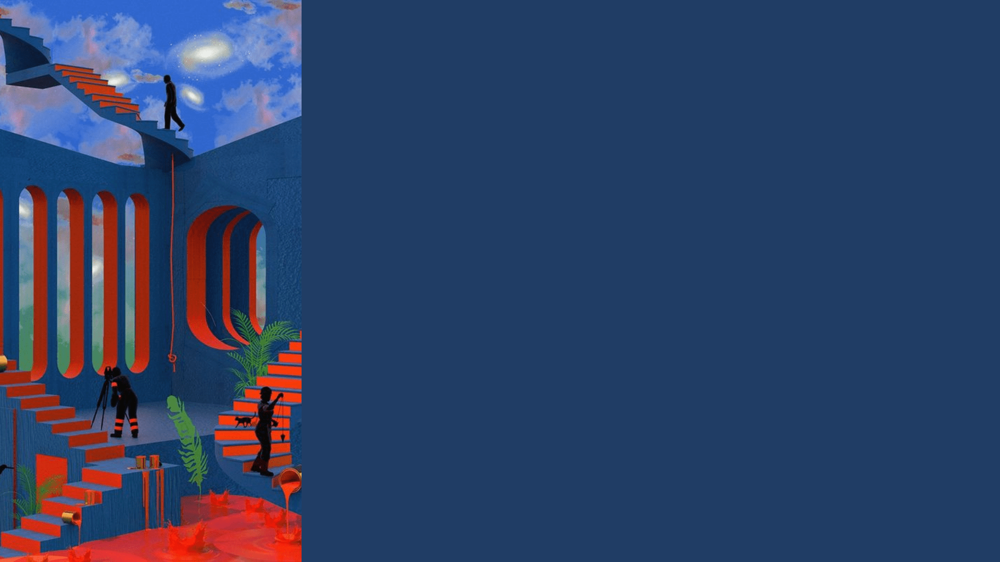

El surrealismo fue una vanguardia artística que comenzó aproximadamente en 1920 y se extiende hasta la actualidad. Surgió primero en Francia de la mano de André Breton (1896-1966), inspirado por el dadaísmo y las ideas del subconsciente de Sigmund Freud.
Acceder al subconsciente significaba mostrar pensamientos y deseos indecorosos, plasmar imágenes chocantes para exponer la depravación del ser humano, disfrazado de civilizado por la sociedad burguesa.
Sirvió de inspiración e influencia para la mayoría de las ramas del arte como la pintura, escultura, cine, fotografía, poesía y literatura entre otras.
